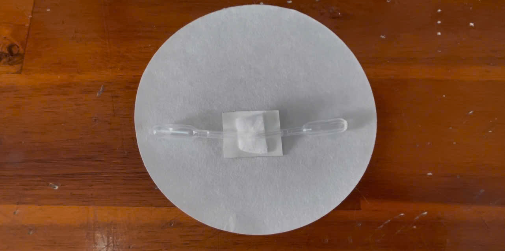
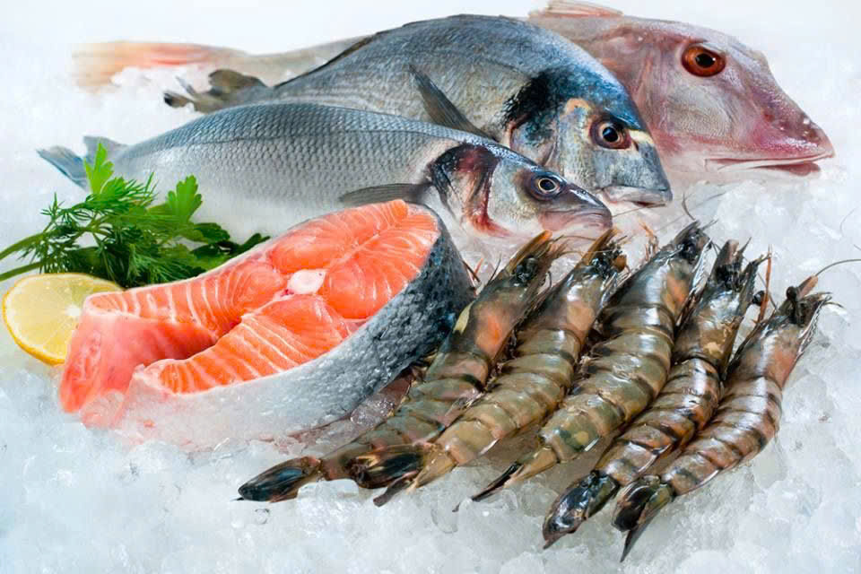

Chất lượng thực phẩm.
Minh bạch theo thời gian thực.
Hơn 30% thực phẩm bị lãng phí toàn cầu do đứt gãy chuỗi cung ứng lạnh. Công nghệ nhãn TTI (Time-Temperature Indicator) thông minh kết hợp phân tích xử lý ảnh kỹ thuật số mang tới giải pháp số hóa giám sát nhiệt độ tích lũy trực quan, minh bạch và tức thì.
Số hóa giám sát nhiệt độ với độ chính xác cao
Nhãn TTI dạng hai khoang phản ứng tích tụ toàn bộ tác động của thời gian và nhiệt độ trong quá trình vận chuyển. Khi phát hiện biến đổi màu sắc, thuật toán trích xuất chỉ số độ tối giúp đưa ra quyết định chính xác cho an toàn thực phẩm.
Giám sát liên tục
Ghi lại toàn bộ lịch sử biến động nhiệt độ trong suốt hành trình bảo quản mà nhiệt kế điện tử đo điểm không thể thể hiện được.
Phản ứng hóa học vĩnh viễn
Phản ứng đồng hồ Vitamin C - Iodine tạo sự biến màu vĩnh viễn không thể đảo ngược, ngăn chặn hành vi che giấu việc đứt chuỗi lạnh.
Số hóa AI & Thuật toán độ tối
Trích xuất mức độ đứt chuỗi qua chỉ số độ tối chuẩn hóa D, giúp minh bạch hóa dữ liệu đánh giá trên điện thoại thông minh.
Tổng Quan Dự Án & Công Nghệ TTI
Nghiên cứu phát triển nhãn cảnh báo đứt chuỗi lạnh không dùng điện dựa trên phản ứng đồng hồ hóa học và công nghệ xử lý ảnh số.
Sứ mệnh & Vấn đề nghiên cứu
Trong vận chuyển và lưu trữ thực phẩm nhạy cảm nhiệt (như sữa tươi, hải sản, vắc-xin, thực phẩm chế biến sẵn), nhiệt độ môi trường thường xảy ra hiện tượng biến đổi cục bộ do quá trình bốc xếp hàng, hỏng hóc thiết bị làm lạnh hoặc vận chuyển chặng cuối. Nhiệt kế truyền thống chỉ đo nhiệt độ tại một thời điểm nhất định mà hoàn toàn không tích lũy được quãng thời gian sản phẩm bị tăng nhiệt.
Dự án nghiên cứu giải pháp chế tạo nhãn TTI dạng hai khoang độc lập, nhỏ gọn, chi phí thấp dán trực tiếp ngoài bao bì. Nhãn tự động ghi lại lịch sử tích nhiệt liên tục thông qua sự đổi màu vĩnh viễn không thể đảo ngược từ trắng/xám nhạt sang xanh tím/xanh đen đậm khi có hiện tượng đứt chuỗi lạnh.
Ý Nghĩa Chỉ Số Độ Tối D Trong Phân Tích Màu
Thuật toán phân tích số hóa sử dụng mô hình màu RGB để tính toán Chỉ số độ tối chuẩn hóa D (nhận giá trị từ 0.000 đến 1.000) theo công thức toán học:
Màu sắc của tâm nhãn nằm ở tông Trắng hoặc Xám nhạt. Các giá trị R, G, B đều ở mức cao (gần 255). Điều này phản ánh phản ứng đồng hồ chưa xảy ra hoặc mới ở giai đoạn đầu, thực phẩm được bảo quản liên tục trong điều kiện lạnh an toàn đạt tiêu chuẩn.
Màu sắc của tâm nhãn chuyển đậm dần sang Xanh Navy, Xanh Tím rồi đến Xanh Đen sẫm. Giá trị R, G, B giảm mạnh về gần 0. Điều này chứng tỏ phản ứng đồng hồ đã hoàn tất do nhiệt độ tích lũy cao, xác nhận sản phẩm đã bị đứt chuỗi lạnh nghiêm trọng và chất lượng bị suy giảm.
Hệ phản ứng Vitamin C - Iodine
Sử dụng Vitamin C, dung dịch Lugol/Iodine, H₂O₂ 3% và Hồ tinh bột. Vitamin C đóng vai trò chất khử tạo độ trễ cảm ứng trước khi tạo màu xanh đen rõ rệt với hồ tinh bột.
Thuật toán trích xuất ảnh kỹ thuật số
Chương trình xử lý ảnh tự động nhận diện vùng tâm tem, loại trừ nhiễu ánh sáng môi trường, trích xuất mã màu RGB trung bình và tham chiếu với dải phổ màu chuẩn.
Khám Phá Toàn Diện Về Cơ Chế TTI & Chuỗi Lạnh
Tìm hiểu chi tiết cấu tạo nhãn, tác động nhiệt độ đến thực phẩm và các phương pháp bảo quản chuẩn xác nhất.
Cấu tạo chi tiết nhãn TTI
Bấm vào các khoang để xem cụ thể cơ chế thành phần:
Khoang A
+
Iodine
Vách
ngăn
Khoang B
+
Hồ tinh bột
Khoang A: Chứa hỗn hợp Vitamin C + Iodine
Khoang chứa dung dịch hoạt hóa gồm Vitamin C và Iodine. Khoang này đóng vai trò chất khử tạo khoảng thời gian trễ (induction period) ban đầu nhằm ngăn chặn phản ứng đổi màu xảy ra quá sớm khi sản phẩm vẫn ở nhiệt độ chuẩn.

Hình ảnh thực tế cấu tạo tem TTI.
Tác động của nhiệt độ đến bảo quản thực phẩm
Nhiệt độ là yếu tố quyết định tốc độ suy giảm chất lượng thực phẩm. Khi nhiệt độ vượt ngưỡng an toàn (ví dụ: thực phẩm mát từ 0°C đến 4°C bị đẩy lên trên 15°C - 25°C), các hệ lụy nghiêm trọng xảy ra:
Cách bảo quản đúng trong chuỗi cung ứng lạnh
Để duy trì chuỗi lạnh xuyên suốt từ nhà sản xuất đến người tiêu dùng, các quy tắc vận hành sau đây là bắt buộc:
Hạ nhiệt độ thực phẩm xuống dải an toàn (Đông lạnh dưới -18°C, Hàng mát từ 0°C đến 4°C) ngay sau khi thu hoạch hoặc chế biến.
Xếp hàng có khoảng hở tối thiểu 10cm, không che lấp cửa gió để khí lạnh lưu thông đều khắp các kiện hàng.
Ưu tiên xuất kho trước các sản phẩm có thời gian tích nhiệt cao (nhận diện nhanh qua tem TTI đổi màu).
Dán tem nhãn TTI lên từng đơn vị sản phẩm để kiểm tra minh bạch nhiệt độ tích lũy suốt chặng đường.
Dải Nhiệt Độ Bảo Quản Tiêu Chuẩn
Áp dụng cho thịt, hải sản cấp đông sâu và thực phẩm trữ đông dài hạn.
Áp dụng cho rau củ quả tươi, sữa tươi và thực phẩm chế biến sẵn ngắn ngày.
Yêu cầu khắt khe không để đóng băng ($<0^\circ\text{C}$) đối với chế phẩm sinh học.

Thực phẩm đông lạnh.
Vật Liệu Thân Thiện Môi Trường
Toàn bộ vỏ nhãn TTI được cấu thành từ màng polymer sinh học phân hủy sinh học, kết hợp với các hoạt chất sinh học tự nhiên (Vitamin C, tinh bột thực phẩm), hoàn toàn an toàn khi tiếp xúc trực tiếp hoặc gián tiếp với bao bì thực phẩm loại 1.
Hệ Sinh Thái IoT & Mobile App
Ứng dụng tích hợp công nghệ xử lý ảnh thông minh trên smartphone, cho phép người tiêu dùng cuối và cơ quan quản lý thị trường kiểm tra nguồn gốc, thời hạn và độ an toàn của sản phẩm chỉ qua một thao tác quét camera đơn giản dưới 3 giây.
Quy Tắc Vận Hành Kho Lạnh & Nguyên Tắc FIFO/FEFO
Khi bốc dỡ hàng từ xe tải lạnh vào kho, thay đổi nhiệt độ đột ngột dễ làm ngưng tụ hơi nước. Tem TTI giúp ghi nhận chính xác thời gian chịu nhiệt này.
Kết hợp nguyên tắc xuất hàng hạn sử dụng trước cùng chỉ số độ tối D của tem giúp hệ thống kho tự động ưu tiên xuất các kiện hàng có nguy cơ cao trước.
Bản Đồ Số Hóa Chuỗi Lạnh Đô Thị (HCMC Dashboard)
Tự tạo bản đồ TP.HCM vector độc quyền, đồng bộ tương tác sáng bừng vùng trọng điểm và làm mờ xám các khu vực còn lại.
Bản Đồ Vector Vùng Trọng Điểm TP.HCM
Bấm chọn các ô bên dưới: Vùng tương ứng trên bản đồ SVG sẽ sáng bừng, các vùng khác mờ đi.
Chợ Đầu Mối Bình Điền (Quận 8)
Trung tâm mua bán hải sản đông lạnh và thịt tươi sống lớn nhất TPHCM, phục vụ lượng tiêu thụ khổng lồ cho hàng triệu cư dân đô thị mỗi đêm.
Điểm nóng giám sát chuỗi lạnhĐiều Kiện Bảo Quản & Vận Hành
Duy trì nghiêm ngặt dải nhiệt độ chuẩn từ kho lạnh trung chuyển đến xe tải phân phối chặng cuối, ngăn chặn tuyệt đối hiện tượng sốc nhiệt.
Kiểm tra tem TTI liên tụcMức Độ An Toàn & Minh Bạch
Ứng dụng nhãn TTI hai khoang kết hợp trích xuất ảnh kỹ thuật số giúp người tiêu dùng kiểm tra độ an toàn sản phẩm dưới 3 giây.
Đạt chuẩn kiểm định đô thịBài Toán Kinh Tế & Tiềm Năng Ứng Dụng Tại TP.HCM
Phân tích chi phí - lợi ích (Cost-Benefit) và tiềm năng tiết kiệm hàng chục tỷ đồng lãng phí thực phẩm mỗi năm.
So Sánh Chi Phí: Nhãn TTI Không Dùng Điện vs Datalogger Điện Tử
| Tiêu chí so sánh | Nhãn TTI Không Dùng Điện (Dự án) | Thiết bị Datalogger Điện Tử |
|---|---|---|
| Chi phí đầu tư mỗi đơn vị | Vài trăm đến 1.500 VNĐ / tem | 200.000đ - 1.500.000 VNĐ / thiết bị |
| Khả năng dán trên từng sản phẩm | Dán trực tiếp lên từng bao bì sản phẩm (Unit-level packaging) | Chỉ gắn được cho nguyên thùng/container lớn do giá đắt |
| Nguồn điện & Bảo trì | Hoàn toàn thụ động, không cần pin/điện | Dùng pin lithium, cần thu hồi và sạc định kỳ |
| Khả năng minh bạch cho người tiêu dùng | Người mua quét ảnh bằng điện thoại là biết ngay độ an toàn | Người tiêu dùng cuối không thể tự đọc dữ liệu |
Quy Mô Hệ Thống Bán Lẻ TP.HCM
Thành phố Hồ Chí Minh hiện có hơn 250 siêu thị lớn (Co.opmart, Lotte Mart, AEON, Emart...) và hàng nghìn cửa hàng tiện lợi, chuỗi bách hóa (WinMart, Bách Hóa Xanh, Circle K...).
Tiết Kiệm Hàng Chục Tỷ Đồng
Việc ứng dụng nhãn TTI giúp phát hiện sớm thực phẩm suy giảm chất lượng trước khi hỏng nặng, giúp giảm thiểu đáng kể lượng thực phẩm bị tiêu hủy lãng phí, tiết kiệm hàng chục đến hàng trăm tỷ đồng mỗi năm cho các nhà phân phối và người tiêu dùng.
Nhật Ký Thực Nghiệm & Hình Ảnh R&D Lab
Tư liệu thực tế từ phòng thí nghiệm của nhóm tác giả: Quá trình pha chế hóa chất, thử nghiệm màu và ép màng nhãn hai khoang.
Pha Chế Vitamin C & Iodine
Chuẩn bị nồng độ dung dịch chuẩn để tạo thời gian trễ chính xác cho đồng hồ phản ứng nhiệt độ.
Hồ Tinh Bột & H₂O₂ 3%
Thử nghiệm phản ứng tạo phức màu xanh đen đặc trưng khi hoàn tất giai đoạn khử của Vitamin C.
Ép Màng Nhãn Hai Khoang
Hoàn thiện nguyên mẫu tem dán thực tế với vách ngăn dễ kích hoạt bằng tay trước khi dán lên sản phẩm.
Cam Kết Từ Nhóm Nghiên Cứu
Sản phẩm không chỉ dừng lại ở lý thuyết mô phỏng mà đã được chế tạo thành công thành nguyên mẫu vật lý hoàn chỉnh, sẵn sàng thử nghiệm diện rộng tại các kho lạnh và hệ thống phân phối thực phẩm tại TP.HCM.
Khảo Sát & Phân Tích Nhãn TTI
Tải ảnh thực tế từ máy tính hoặc điện thoại lên web để AI trích xuất trạng thái tích lũy nhiệt độ.
Tải ảnh thực tế hoặc Chụp tem TTI từ máy
Hỗ trợ trích xuất tệp ảnh PNG, JPG trực tiếp
AI đang phân tích tâm màu TTI...
Chưa có dữ liệu
Tải ảnh hoặc dùng AI tự chọn vị trí tem TTI.